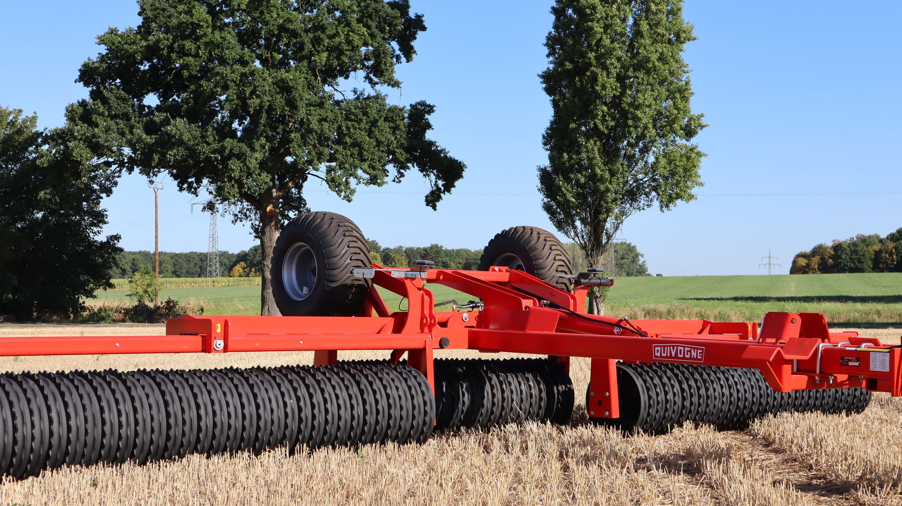

Walzenprogramm
Quivogne Cambridge-Walzen
Rückverfestigung, Strohzerkleinerung, Saatbettbereitung: Quivogne-Cambridgewalzen mit Pendelausgleich und Messerwalzen für die Strohbearbeitung. Die Frontanbau-Walzen von agroXX finden Sie unter Frontanbau.
- bis 9,50 mArbeitsbreite
- Ø 520–620 mmRinge
- klappbarmit Beleuchtung
Ausstattung
- ROLLMAX
- Quivogne-Cambridgewalze mit 620-mm-Ringen und Pendelausgleich
- ROLLFIRST
- Quivogne-Cambridgewalze mit 520-mm-Ringen und XL-Bereifung
- Messerwalze
- SlashCut für die Strohbearbeitung
Walzenprogramm
Quivogne Cambridge-Walzenprogramm
Die Quivogne-Cambridgewalzen im Feld: klappbar, mit Beleuchtung und Pendelausgleich.


Walzenprogramm
Weitere Ansichten
ROLLMAX und ROLLFIRST in verschiedenen Arbeitsbreiten.


Rückverfestigen. Saatbett bereiten. Flächenleistung.
Baugrößen und Ausführungen
ROLLMAX
Cambridgewalze mit 620-mm-Ringen und Pendelausgleich, 8,30 und 9,50 m.
| Modell | Ausführung | Eckdaten |
|---|---|---|
| Quivogne ROLLMAX 8,30 m | 620-mm-Ringe · Pendelausgleich · sofort lieferbar | Cambridgewalze · Arbeitsbreite 8,30 m · Ø 620 mm · Gewicht 4.800 kg · klappbar, Beleuchtung |
| Quivogne ROLLMAX 9,50 m | 620-mm-Ringe · Pendelausgleich · sofort lieferbar | Cambridgewalze · Arbeitsbreite 9,50 m · Ø 620 mm · Gewicht 5.700 kg · klappbar, Beleuchtung |
ROLLFIRST
Cambridgewalze mit 520-mm-Ringen und XL-Bereifung, 8,20 m.
| Modell | Ausführung | Eckdaten |
|---|---|---|
| Quivogne ROLLFIRST 8,20 m | 520-mm-Ringe · XL-Bereifung · sofort ab Lager | Cambridgewalze · Arbeitsbreite 8,20 m · Ø 520 mm · Gewicht 3.800 kg · klappbar, Beleuchtung |
Messerwalze
SlashCut für die Strohbearbeitung.
| Modell | Ausführung | Eckdaten |
|---|---|---|
| agroXX SlashCut Tandem-Messerwalze 5,0 m | Hydro mit Lenkbock | Frontanbau · Arbeitsbreite 5,0 m · Ø 460 mm · Gewicht 1.730 kg · klappbar, Beleuchtung |
Angaben ohne Gewähr. Aktuelle Verfügbarkeit und Preise erfragen Sie bitte direkt bei uns.
Beratung direkt vom Händler
Rufen Sie an, schreiben Sie per WhatsApp oder E-Mail. Wir sprechen mit Ihnen über Maschine, Ausstattung und Lieferung.